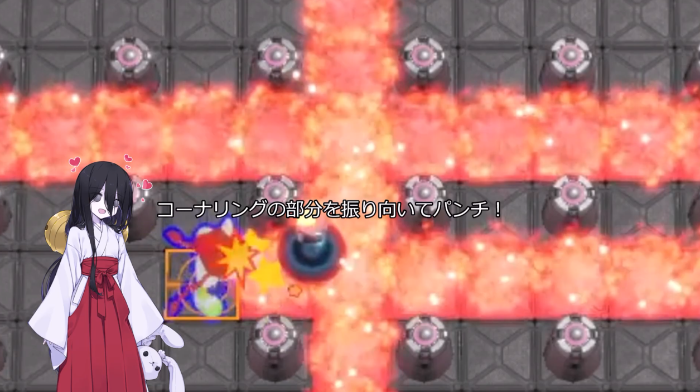
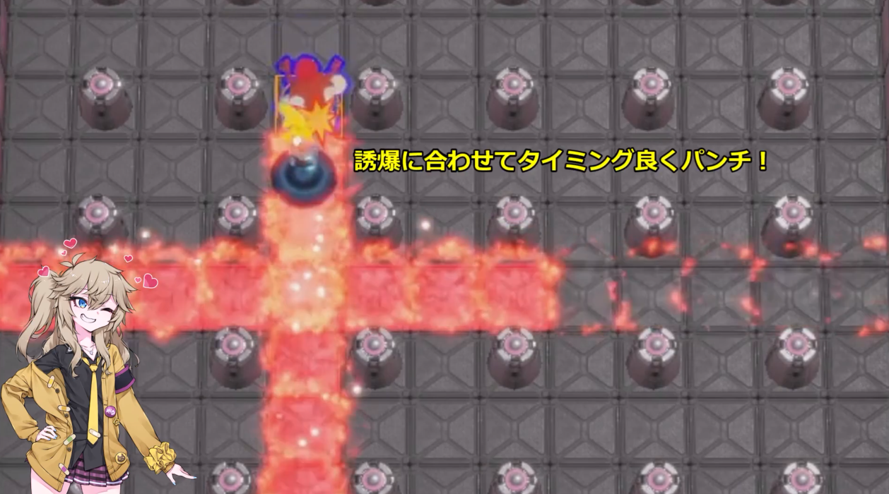
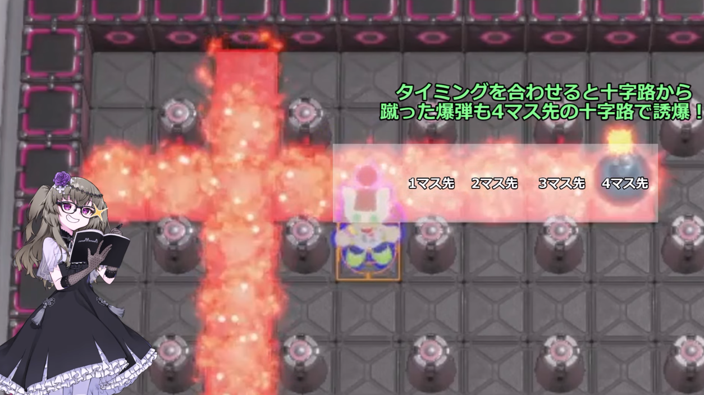
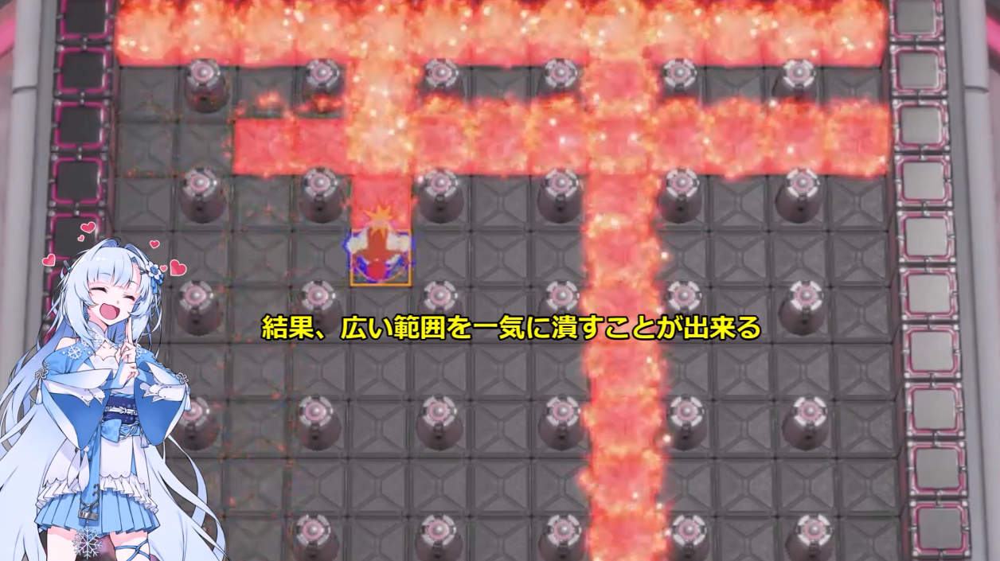

誘爆技講座動画 第1弾
起爆パンチ

チーム戦での活用
他の爆弾の爆風で誘爆し、爆発する直前の爆弾をパンチすることで着弾後すぐに爆発を起こす技です。 パターン化が比較的容易で相手の退路を意識して使うことで、色々な方向から圧力をかけることが出来ます。
注意点
攻めの起点や奇襲として使いやすい一方で、爆風のタイミングを誤ると自爆の原因になったり味方を巻き込んでしまう危険があります。 自身の安全な退路を確保し、爆風が発生するラインに味方が居ないことを確認してから狙いましょう。
SBR2交流会やギンギンパワーの対戦で使われる誘爆技を紹介しています。
このページでは技の概要を簡易的に説明していますので、詳しい手順や実戦例はYouTube動画でご覧になってください。
誘爆技講座動画 第1弾

他の爆弾の爆風で誘爆し、爆発する直前の爆弾をパンチすることで着弾後すぐに爆発を起こす技です。 パターン化が比較的容易で相手の退路を意識して使うことで、色々な方向から圧力をかけることが出来ます。
攻めの起点や奇襲として使いやすい一方で、爆風のタイミングを誤ると自爆の原因になったり味方を巻き込んでしまう危険があります。 自身の安全な退路を確保し、爆風が発生するラインに味方が居ないことを確認してから狙いましょう。
誘爆技講座動画 第2弾

誘爆し、爆発直前となっている爆弾のタイミングを見極めてパンチを合わせる、より精密な起爆パンチです。 相手が安全だと思っている位置へ急に爆風を送り込むことが出来るため、決定打となりやすい強力な技です。 また、包囲をこの技で回避することも可能なため防御にも活用出来る汎用性の高い起爆パンチです。
タイミングを取る精度が重要なため、慣れるまでは失敗しやすいです。 かなり強力な技ですが、無理に狙いすぎるとカウンターを食らう原因にもなってしまいます。 急に爆風を送り込めるということはフレンドリーファイアも起こりやすいということなので 味方との位置関係にも気を配りましょう。
誘爆技講座動画 第3弾

誘爆をし続けながら相手に近づいていく技です。 相手の退路を潰しやすく、盤面全体に圧力をかけやすくなります。 また、キックストップを活用すれば誘爆させるラインを多少は選ぶことが出来るようになるため 「潰したいラインを意図的に潰す」ということも可能です。
見た目の動きが派手で相手を惑わせやすい反面、自分の安全確認が甘くなると事故につながります。 技を魅せることよりも、相手の退路と自分の退路を同時に見ることが大切です。 操作もだいぶ忙しくなるため、自爆にも要注意です。
誘爆技講座動画 第4弾

パークダンスに似た動きに起爆パンチを織り交ぜることで相手の移動先や回避先に圧をかける技です。 様子見で固まっている相手には特に効果を発揮します。爆弾を置く位置の性質上、自爆になりづらいというのも特長です。
第1弾の起爆パンチをする直前に1手操作が加わるため、慣れないうちは失敗が多くなります。 無理に決定打として使用するというだけでなく、牽制でも使うというのを意識しましょう。
今後の追加について
第5弾 pepo式
第6弾 引き蹴り
第7弾 a1式
第8弾 裏起爆パンチ
乞うご期待